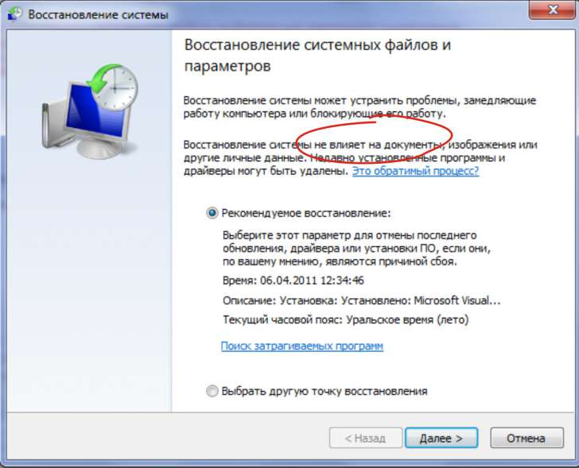

Как восстановить файл CorelDRAW (cdr)
sas555 / 18.06.2010, 11:17/00:41
Форум:
Доброго времени суток, уважаемые!
Помогите, пожалуйста!
При попытке отправить на печать файл из под Х5 -
вылетела какаято ошибка про нехватку памяти.
После перегрузки файл открывается пустым.
Хотя весит ровно столько, сколько должен.
Но - при рассмотрении - получается, что то типа архива, где находятся:
color
content
metadata
links xml
В content есть riffData.cdr, которое похоже и есть содержимое.
Как его восстановить?
Выручайте - горю...
ГОСПОДА ЕСТЬ ШАНС У ТОКОГО ФАЙЛА ВОЗРАДИТЬСЯ
КОРЕЛ ГЛЮКНУЛ И ВЫЛЕТЕЛ А ПОСЛЕ ЭТОГО ПРИ ОКРЫТИИ ПИШЕТ ВОТ ЕТО
(1 .cdr is not importable using the selected filter, or format is not supported)
Перед тем как создавать тему, воспользуйтесь поиском!
Здравствуйте, скажите, пожалуйста, есть ли возможность восстановить кореловские файлы, если был осуществлен откат системы???
Происходит что-то странное: снесли фотошоп с диска ц, на диске д находилась папка с кореловскими файлами, как я поняла, один умелец сделал откат системы, и почему-то с диска д удалилась именно эта папка!!! Я уже испробовала кучу программ для восстановления, но файлы с расширением cdr не отображаются!!! (((
Как человек реанимировавший не один десяток файлов, могу посоветовать следующее:
для начала проверьте "корзину". Может эта папка спкойно там лежит. :)
Далее, если папка действительна удалена, нежелательно пользоваться этим диском, поскольку многие программы могут создавать на этом диске какие свои временные файлы и система просто "затрет" ваши удаленные файлы. Кроме того, при некоторых способах отката, предыдущее состояние системы восстанавливается по секторам и, конечно же в этой ситуации, если на восстанавливаемый сектор приходилась папка с кореловскими файлами, то она также затрется без возможности восстановления.
Здравствуйте, большое спасибо, я итак не пользуюсь этим диском, и в корзине тоже ничего не лежит, мой вопрос был, возможно ли вернуть эти файли,если да, то каким образом??потому что программы восстановления не отобразили мне файлы с расширением cdr.
Есть такая программа WinHex. В ней меню Tools > Open Dick, выбираете диск и ждёте. Когда просканирует смотрите так же как в проводнике или в папке removed или что то типа того там есть.
Если ей не найдёте, то ни чем не найдёте...
...и в случае этого узнаёте кто откатил систему, берёте биту потяжелее и идёте пи.... его медленно но больно :D шутка
))))
Спасибо, попробую найти эту программу, а нельзя попробовать восстановить какой-нибудь раздел винчестера или что-то в этом духе??просто папка ОЧЕНЬ важная :(
Recuva - неплохая утилита для восстановления, бесплатная.
http://www.piriform.com/recuva
насколько мне известно откат системы НЕ затрагивает файлы 
Gala, попробуйте поискать не кореловские файлы, а саму удаленную папку. Также вполне возможно, вы неправильно формируете запрос поиска.
Раз уж заговорили о программах восстановления могу еще посоветовать Diskinternals UnEraser или Partition Recovery. Восстанавливает всё - удаленные файлы, MBR, древовидную структуру папок, даже файлы удаленные из корзины. (Не на правах рекламы :) )
Большое всем спасибо за помощь,НО
аааааааа(!!)я уже все это пробовала!
Программы UnEraser версии 5 и 6, Avira, Undeleteplus,дело в том, что папка восстановилась,но она ПУСТАЯ, почему откат системы затронул именно эти файлы, хотя, как правильно заметил blizzz, они должны были остаться, я ума не приложу!!
UnEraser показал мне все удаленные файлы, чуть не от рождества христова)),кроме этих,нужных.. :(
"умелец",который мне все это натворил,тоже не понимает, что сам наделал,ооооох.
Страницы